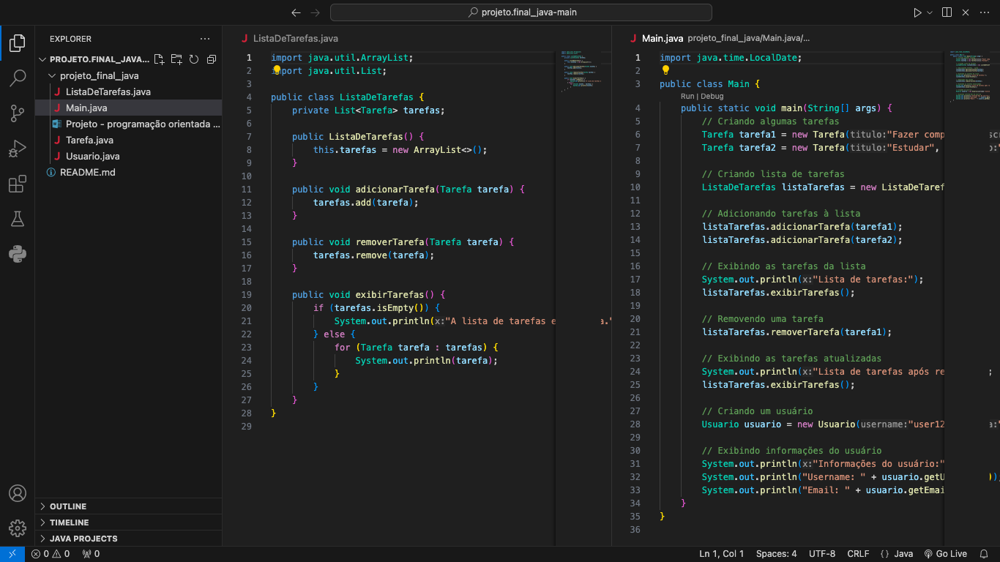

Engenharia de Software | Data Science | Machine Learning
Uma aplicação de desenho que utiliza os movimentos das mãos para criar desenhos em neon.
Recursos:
- Simplicidade: Interface minimalista para focar na experiência de desenho.
- Intuitivo: O aplicativo responde aos movimentos das mãos em tempo real.
- Criatividade: Escolha diferentes cores neon para personalizar seus desenhos.
Desenvolvi um jogo Flappy Bird onde os pássaros são controlados por uma rede neural treinada por meio de algoritmos genéticos.
Recursos:
- Pássaros evoluem e melhoram suas pontuações ao longo de gerações sucessivas.
- Rede neural se adapta para otimizar o comportamento do pássaro, evitando tubos e aumentando as chances de sobrevivência.
Estou animado em compartilhar meu primeiro projeto de Reconhecimento Facial! Explorei as bibliotecas Tkinter e OpenCV para criar uma aplicação poderosa e intuitiva.
Principais Funcionalidades:
- Adição, verificação e reconhecimento de rostos.
- Demonstração em quatro imagens ilustrando o processo.
Compartilho minha jornada de desenvolvimento de um jogo da cobrinha com IA em Python! Mergulhei de cabeça em um projeto empolgante que me desafiou e inspirou de várias maneiras.
Desenvolvimento:
- Aprendizado intenso sobre Inteligência Artificial e Aprendizado de Máquina.
- Desenvolvimento de um jogo da cobrinha que aprende a jogar por conta própria.
Obs: O projeto ainda não está concluído, mas tenho mais coisas para fazer, então ficará de stand-by.
Repositório no GitHub

Desenvolvimento de um sistema de gerenciamento de tarefas utilizando Programação Orientada por Objetos.
Objetivo: Resolver o problema de organização diária, permitindo aos usuários criar, atualizar, e remover tarefas.
| N° | Melhoria | Justificativa |
|---|---|---|
| 1 | Adicionar prioridades às tarefas | Destacar tarefas mais importantes. |
| 2 | Implementar categorias de tarefas | Facilitar a organização e filtragem. |
| 3 | Notificações e lembretes | Alertar sobre prazos de tarefas. |
| 4 | Compartilhamento de tarefas | Colaboração em projetos e atividades em equipe. |